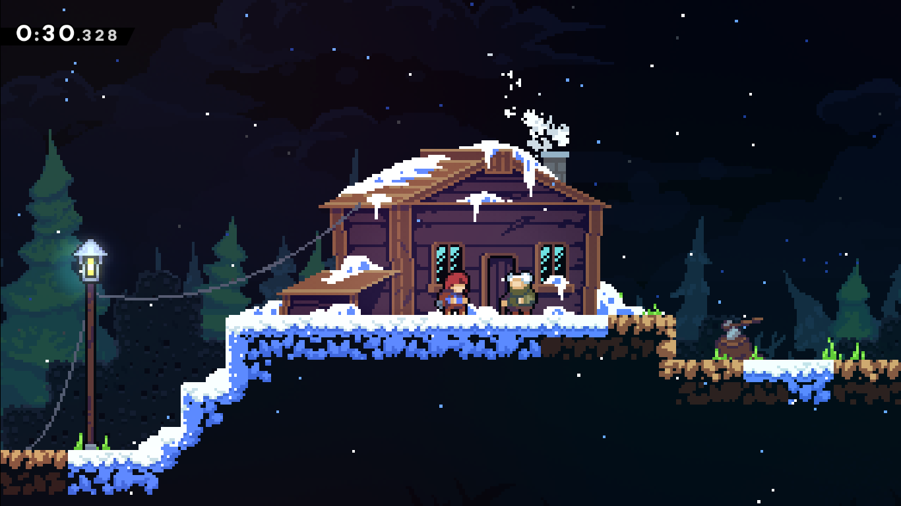
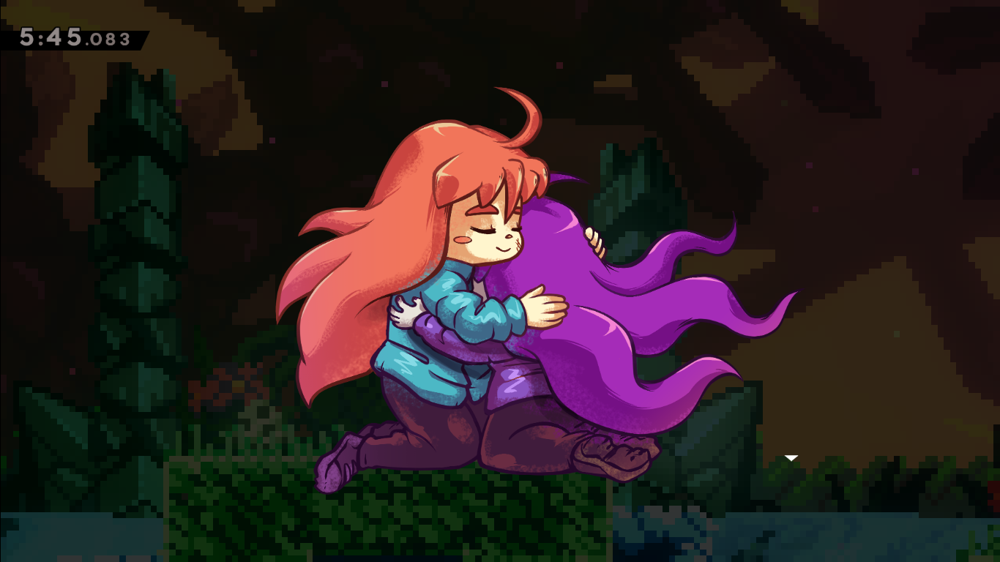
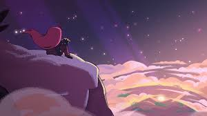
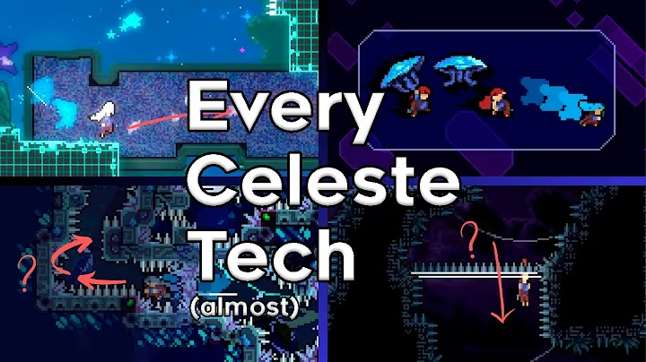

Apa itu game Celeste?
Celeste adalah game platformer indie yang dirilis pada tahun 2018. Dikembangkan oleh Matt Makes Games, Celeste dikenal karena tingkat kesulitannya yang tinggi, desain level yang cerdas, dan cerita yang menyentuh tentang perjuangan melawan kecemasan dan depresi.
"I need to rediscover myself, my relationship to play and to the world, and thus my relationship to my work... I need to allow my identity to disintegrate. I need to have faith that the essential core that constitutes 'me' is indestructible"
— Matt Thorson, kreator Celeste
Dalam game ini, pemain mengendalikan karakter bernama Madeline yang memutuskan untuk mendaki gunung Celeste. Sepanjang perjalanan, pemain akan menghadapi berbagai rintangan platforming yang menantang, sambil mengungkap lapisan cerita yang dalam tentang perjuangan internal Madeline.
Plot Game
Madeline, seorang wanita muda, memutuskan untuk mendaki gunung Celeste sebagai cara untuk mengatasi kecemasan dan depresi yang dia alami. Sepanjang perjalanan, dia bertemu dengan berbagai karakter, termasuk versi dirinya yang lebih gelap yang disebut "Part of Me". Melalui interaksi dengan karakter-karakter ini, pemain mendapatkan wawasan tentang perjuangan mental Madeline dan bagaimana dia belajar menerima dirinya sendiri.

Selama perjalanannya, Madeline bertemu dengan Granny, seorang wanita tua yang tinggal di puncak gunung, serta Theo, seorang pendaki muda yang juga mencoba menaklukkan Celeste. Setiap karakter memiliki cerita dan motivasi mereka sendiri, yang semuanya berkontribusi pada tema utama game tentang penerimaan diri dan ketahanan.
Madeline menyadari selama perjalanannya bahwa "Part of Me" bukanlah musuh, melainkan bagian dari dirinya yang harus dia terima dan pelajari untuk bekerja sama. Ini adalah metafora yang kuat untuk bagaimana kita semua memiliki sisi gelap atau bagian dari diri kita yang sulit, tetapi dengan penerimaan dan kerja keras, kita bisa tumbuh dan menjadi lebih utuh.

Dengan menerima bagian dari dirinya, Madeline akhirnya berhasil mencapai puncak gunung Celeste. Namun, perjalanan itu bukan hanya tentang mencapai tujuan fisik, tetapi juga tentang perjalanan emosional dan mental yang dia lalui untuk sampai ke sana.

Gameplay
Gameplay Celeste berfokus pada platforming yang sangat-sangat presisi, absolute pixelated precision. Pemain harus mengendalikan Madeline untuk melompat, memanjat, dan menggunakan kemampuan khususnya untuk mengatasi rintangan yang semakin sulit. Setiap level dirancang dengan cermat untuk menantang keterampilan pemain, tetapi juga memberikan rasa pencapaian yang besar ketika berhasil melewati bagian yang sulit.
Jujur saja, meski Celeste memiliki mekanik yang sederhana, tetap saja mekanik tersebut bisa di upgrade menjadi sangat kompleks. Berikut adalah semua teknik dalam game ini (Entah mungkin nanti ada teknik baru yang ditemukan oleh komunitas, tapi ini adalah teknik-teknik yang sudah diketahui saat ini):
- Walk
- Jump
- Dash
- Grab
- Climb
- Climb Jump
- Block Boost
- Dream Grab
- Dream Jump
- Wallbounce
- Hyperdash
- Superdash
- Wavedash
- Extended Hyper
- Extended Super
- Reverse Wavedash
- Reverse Super
- Reverse Hyper
- Neutral Jump
- Bunnyhop
- Ultra dash
- Chained Ultra
- Demo dash
- Archie
- Dream Hyper
- Dream Super
- Reverse Dream Hyper
- Reverse Dream Super
- Backboost
- 5-Jump
- Corner Boost
- Jelly Ultra
- Hyper Bunnyhop
- Demo Hyper
- Moon Boost
- Grounded Ultra
- Fastfall
- Slowfall
- Jellyvator
- Cassette Boost
- Cornerkick
- Superwave
- Wallboost
- Overclocking
- Crouch Jump
- Crouch Climb
- Spike Jump
- Double BlockBoost
- Jelly Smuggle
- Dream Double Jump
- Retention Tech
- Ceiling Pop
- Bubsdrop
- FastBubble
- Bubble Hyper
- Bubble Super
- Wallbounce Cancel
- Spinner Stun
- Input Buffering
- Feather Super
- Delayed Ultra
- Bino Clip
- Water Boost
- Core Hyper
- Core Super
- Launch Boost
- 6-Jump
- 7-Jump
- Cawoosted Fuper
- Lava Climb
- Reform Tech
- Reverse Corner Boost
- CornerBoost Wallboost
- Jelly Climb
- Half-Stamina Climb
- Feather Boost
- Momentum Carry
- Kermit Dash
- Koral Clip
- Spike Clip
- Grounded Ultra Cancel
- Heart Ultra
Bagaimana? Banyak sekali bukan? Tapi jangan khawatir, kamu tidak perlu menguasai semua teknik ini untuk menikmati game ini. Bahkan dengan hanya beberapa teknik dasar, kamu sudah bisa merasakan keseruan dan tantangan yang ditawarkan oleh Celeste.
Sebenarnya dari banyaknya teknik ini, hanya ada beberapa teknik yang memang diajarkan langsung oleh developer dari game misalnya seperti Wallbounce, Hyperdash dan Wavedash. Hanya dengan 3 tiga itu pemain bisa menikmati keseluruhan gamenya. Sisanya adalah teknik-teknik yang ditemukan oleh komunitas pemain yang sangat kreatif dan berdedikasi untuk mengeksplorasi semua kemungkinan dalam mekanik game ini. Seperti yang disebutkan sebelumnya, Celeste adalah platformer yang "absolute pixelated precision."
Saya mendapatkan referensi ini dari komunitas dan video youtube. Silakan cek video ini untuk melihat bagaimana teknik-teknik ini dilakukan dalam gameplay:
Link ke video

Kesimpulan
Celeste mengajarkan kita untuk dapat menerima diri kita apa adanya, termasuk bagian-bagian yang sulit dan gelap sekalipun. Setiap rintangan yang kita hadapi dalam hidup bisa diibaratkan seperti level-level dalam game ini — sulit, menantang, tapi bukan tidak mungkin untuk dilewati. Dengan ketekunan, dukungan dari orang-orang di sekitar kita, dan penerimaan diri, kita bisa mengatasi tantangan tersebut dan mencapai "puncak gunung" kita sendiri.
An Apparation
Not of this world
But because of it
Lurking out of frame
Awake, my heart is a fortress
In dreams I am vulnerable